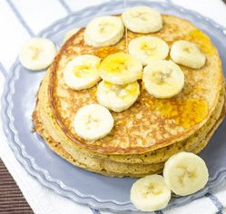

Cottage Cheese Pancakes

In food processor:
- 1 cup cottage cheese
- 1⁄3 cup all-purpose flour
- 2 tablespoons vegetable oil
- banana flavor
- 3 eggs, lightly beaten
Serve with low calorie syrup like Log Cabin
Protein Banana Pancakes
Ingredients: * 2 bananas * 3 eggs * 1⁄2 cup protein powder * 1⁄4 cup oats * 2 teaspoons baking powder * Pinch of sea salt
Instructions: 1. Add all the ingredients to the blender and blend on high until smooth and creamy. 2. Heat and grease a pan over medium-low heat. Pour pancake batter directly from the blender container onto the pan. Cook pancakes until bubbles start to form on the top, 2 – 3 minutes. Flip and cook for another 1 – 2 minutes. Repeat until no batter remains. 3. Serve pancakes and drizzle maple syrup if desired.